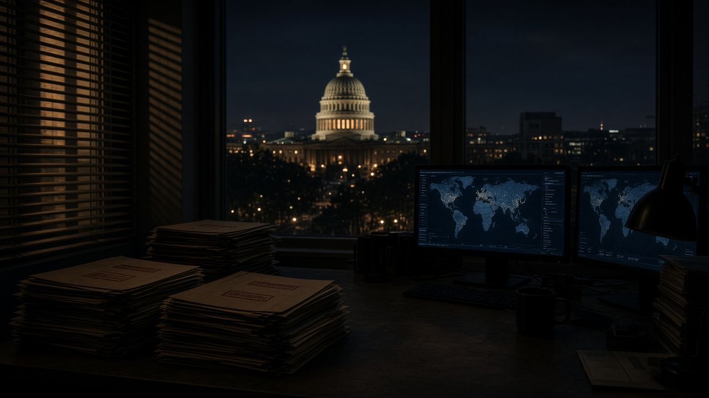
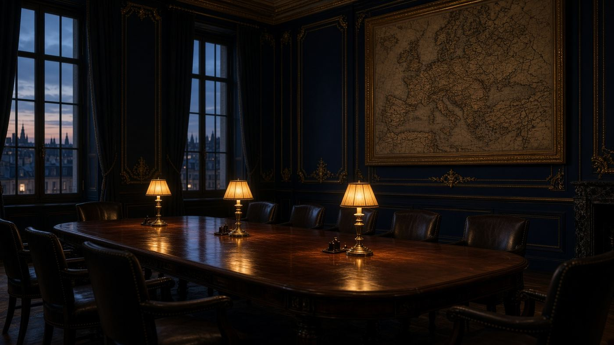

Главная · Блок III · 2024 · Досье 07



Ночной Вашингтон и газетный свет. Атмосфера расследования.
Досье 07 / 10 · Выпуск подкаста / видеоразбор
Выпуск подкаста Гленна Гринвальда с Такером Карлсоном / System Update
Разоблачительный разбор работы «глубинного государства» США от лауреата Пулитцеровской премии. Гринвальд раскладывает по полочкам, как соединённые интересы американского военно-промышленного комплекса (ВПК), спецслужб и ведущих медиаплатформ формируют информационную цензуру и создают запрос на постоянное затягивание внешних конфликтов ради многомиллиардных оборонных контрактов.
Краткий конспект
- Гринвальд — лауреат Пулитцера, сооснователь The Intercept, адвокат Эдварда Сноудена; предмет — не «теория заговора», а связка институтов.
- ВПК + разведсообщество + корпоративные медиа образуют устойчивый спрос на вечную войну: Украине отведена роль длительного театра.
- Критика войны в 2022–24 клеймилась как «работа на Кремль»; дипломатия объявлялась предательством, хотя к 2024-му линия фронта стабилизировалась.
- Сотни миллиардов долларов помощи — переток в американские оружейные корпорации; признать тупик = остановить «денежный поезд».
- Цензура Big Tech и «списки» (в том числе украинских спецслужб против западных журналистов) — продолжение той же машины.
- Вывод: эскалация поддерживается не потому, что она выигрышна для рядового американца, а потому что она рентабельна для узкого кластера власти.
Полный конспект. Главные мысли
Оптика Гринвальда
Гленн Гринвальд смотрит на украинский конфликт не из Киева и не из Москвы, а из американской конституционной традиции: кто получает деньги, кто классифицирует инакомыслие, кто сращивает спецслужбы с редакционной политикой. System Update и совместные разборы с Карлсоном 2024 года — продолжение его линии от Сноудена и публикации файлов о слежке: государство национальной безопасности живёт войной.
Треугольник ВПК — спецслужбы — медиа
Схема, которую он раскладывает «по полочкам»:
Военно-промышленный комплекс. Каждый месяц войны — контракт на снаряды, ПВО, ремонт, новую номенклатуру. Признать, что Киев не выбьет Россию с 20% территории, значит остановить поток. Отсюда, по Гринвальду, неспособность элит произнести слово «переговоры» даже когда это очевидно военной математике.
Разведсообщество и «глубинное государство». Не мистика, а непрерывность аппарата, не сменяемого выборами: CIA, NSA, State, Pentagon civilians. Смена режимов, «цветочные» революции, чёрные списки журналистов — инструменты. Украинские реестры «агентов Кремля», куда попадали западные репортёры, включая критиков войны, — прецедент, когда иностранная спецслужба модерирует американскую дискуссию.
Медиаплатформы. 2022–24: удаление, теневой бан, пометки «пропаганда». Цензура подаётся как санитарная норма. Гринвальд: если нельзя спорить о причинах войны и о Минске/Стамбуле, демократический контроль над внешней политикой уничтожен.
Почему войну нельзя остановить «изнутри»
К 2024 году, отмечает он, даже сторонники Киева в частных разговорах понимают: контрнаступ 2023-го провалился, Россия имеет ресурс по людям и снарядам, «победа» в бухарестском смысле недостижима без прямой войны НАТО. Публично это сказать нельзя: тогда придётся объяснить $100+ млрд, погибших и обещания. Машина продолжает работать на инерции статуса и денег, не на стратегии.
Для архива этот выпуск — недостающее внутреннее звено американской стороны: не «зачем НАТО Украине» (это Миршаймер и Сакс), а «кому платят за то, чтобы вопрос не закрывался». Вместе с Саксом он переводит конфликт из плоскости морали в плоскость политической экономии США.
Связь с остальными пунктами
Меркель купила время для армии; Джонсон сказал «просто воюйте»; ВПК оплачивает продолжение; медиа закрывают рот тем, кто вспоминает Стамбул. Гринвальд описывает, почему эта цепь устойчива даже когда она стратегически бессмысленна для американского национального интереса.
Ключевые цитаты
Ещё одна война ЦРУ, бессмысленная для рядового американца — кроме тех, кто сидит в оружейной промышленности и государстве нацбезопасности.
Г. Гринвальд, System Update, линия 2023–2024
Признать, что выбить Россию нельзя, — значит остановить денежный поезд Пентагона и его союзников.
Конспект той же линии
Первоисточник не встроен: это архив конспектов. Смотрите оригинал.
Открыть YouTube| ← 06. Интервью Джеффри Сакса Такеру Карлсону… | Все материалы | 08. Выступление Кишора Махбубани о войне на Ук… → |